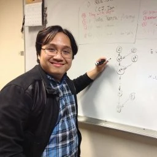
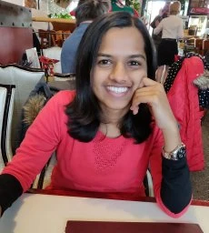
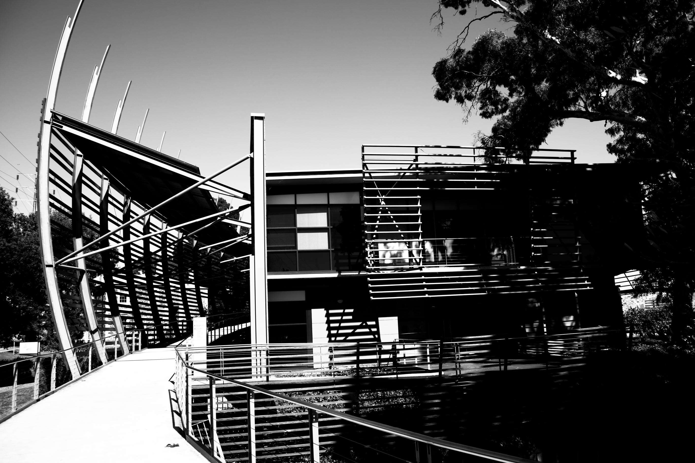

Home
The Workshop on Functional Inference and Machine Intelligence (FIMI) is an international workshop on machine learning and statistics, covering theory, methods and practice. The programme will comprise invited talks and a poster session.
FIMI Down Under will be held on Sunday 13 and Monday 14 December 2026 at the National Wine Centre of Australia in Adelaide, immediately after NeurIPS in Sydney.
The FIMI workshop series has been running since 2016, with previous editions held mainly in Tokyo, as well as in Okinawa, Japan; Bristol, UK; and Sophia Antipolis, France.
Previous workshop: FIMI 2026, Tokyo, 2–5 March 2026.
Registration
Registration is now open. Register via Google Forms. The same form collects invited speaker information and poster presentation details.
Registration is open until .
The registration fee is AUD 150. Invited speakers are exempt from this fee. A light lunch and refreshments will be provided.
Invited speakers
Siu Lun Chau
Nanyang Technological University, Singapore
Explainable Kernel Machines with Shapley values
Kenji Fukumizu
The Institute of Statistical Mathematics, Japan
Understanding Flow Matching: Variational and Analytic Viewpoints
Masaaki Imaizumi
The University of Tokyo, Japan
Memorization Capacity via Mean-Field Transformer Dynamics
Noboru Isobe
RIKEN, Japan
Training-Induced Escape from Token Clustering in a Mean-Field Formulation of Transformers
Krikamol Muandet
CISPA Helmholtz Center for Information Security, Saarbrücken, Germany
Title to be confirmed

Hirofumi Ota
The University of Tokyo, Japan
Anytime-Valid Statistical Inference in LLM Self-Consistency
Donlapark Ponnoprat
Chiang Mai University, Thailand
Doubly Robust Learning of Conditional Counterfactual Mean Embeddings

Mahalakshmi Sabanayagam
Adelaide University, Australia
Optimizer Geometry Sets the Pace: Spectral Learning Dynamics in Matrix Factorization
Russell Tsuchida
Monash University, Australia
Bregman divergences for generalised attention and generalised score matching
Yiming Ying
The University of Sydney, Australia
Stability and Generalization of Straight-Through Estimators for Training Two-Layer Quantized Neural Networks
Programme
The workshop will take place over two days, 13–14 December 2026, with invited talks and a poster session.
- Sunday 13 December: –
- Monday 14 December: –
Poster session
Please submit your poster presentation details through the registration form by .
Poster boards compatible with Velcro will be provided. Each board measures approximately 1800 mm (height) × 1200 mm (width).
Organisers
- Dino Sejdinovic (Adelaide University, Australia)
- Masaaki Imaizumi (The University of Tokyo, Japan)
- Kenji Fukumizu (The Institute of Statistical Mathematics, Japan)
With support from
This workshop is supported by the following institutions and grants:
- Research Center for Statistical Machine Learning, The Institute of Statistical Mathematics, Tokyo
- Responsible AI Research Centre, Australian Institute for Machine Learning, Adelaide
Venue and access
National Wine Centre of Australia
Corner of Botanic Road and Hackney RoadAdelaide, South Australia 5000
Australia
The venue is beside the Adelaide Botanic Garden, on the edge of the city centre.

See the venue’s information on directions, public transport, and parking and accessibility.